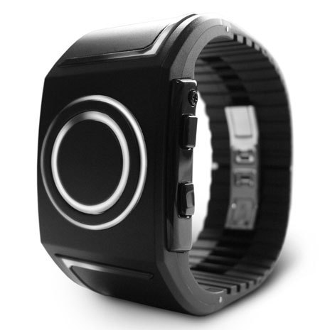

Tue, 25 Oct 2011 15:54:00 · tokyo · design · productdesign
gotta love the japs tokyoflash kisai seven

Gotta love the Japs! - Tokyoflash Kisai Seven tells time with Tron-inspired design, making fans dream come true. - Find out more here.
Tue, 25 Oct 2011 15:54:00 · tokyo · design · productdesign

Gotta love the Japs! - Tokyoflash Kisai Seven tells time with Tron-inspired design, making fans dream come true. - Find out more here.